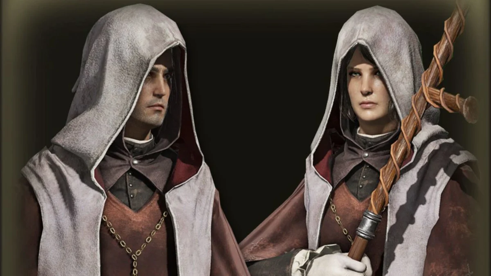

O Astrólogo é a classe perfeita para jogadores que desejam dominar as artes arcanas desde o início da jornada.
Especializado em feitiços devastadores de longo alcance, ele utiliza inteligência elevada para lançar magias poderosas capazes de eliminar inimigos antes mesmo do combate direto começar.
Apesar da baixa resistência física, o Astrólogo compensa com enorme poder destrutivo, controle de área e combate estratégico à distância.